{
"frames": 120,
"csv_rows_raw": 120,
"sampling_stride": 1,
"videos": [
"chittur_river_rescue.mp4"
],
"modes": [
"combined"
],
"active_tools": [
"detect_combined"
],
"altitudes_m": [
50.0
],
"frame_idx_range": [
0,
119
],
"mean_latency_ms": 32.13283333333333,
"std_latency_ms": 37.23098633081409,
"mean_fps": 34.544999999999995,
"std_fps": 3.059940406955281,
"mean_flood_ratio": 0.5732458333333333,
"mean_human_count": 1.675,
"lifecycle": {
"active_tool": "detect_combined",
"benchmark_mode": "combined",
"model_load_events": 1,
"model_reload_events": 0,
"clf_load_ms": 134.25,
"seg_load_ms": 53.17,
"human_load_ms": 3.38,
"model_load_total_ms": 190.81,
"unload_events": [],
"first_frame_latency_ms": 436.52,
"steady_latency_ms": {
"mean": 28.74,
"p50": 28.59,
"p95": 30.07,
"frames": 119
}
}
}
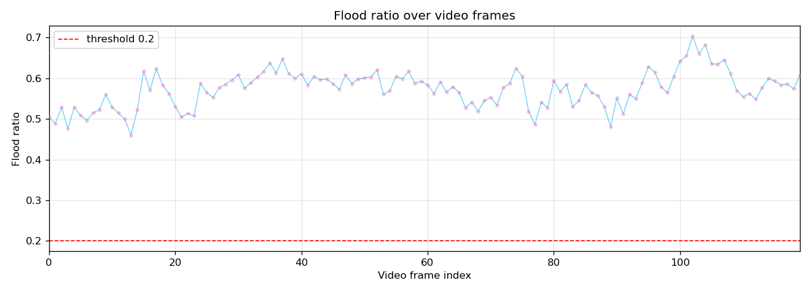
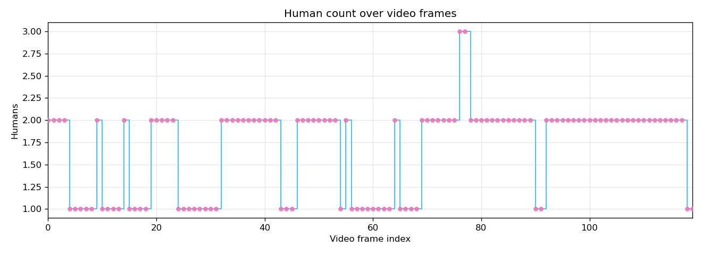
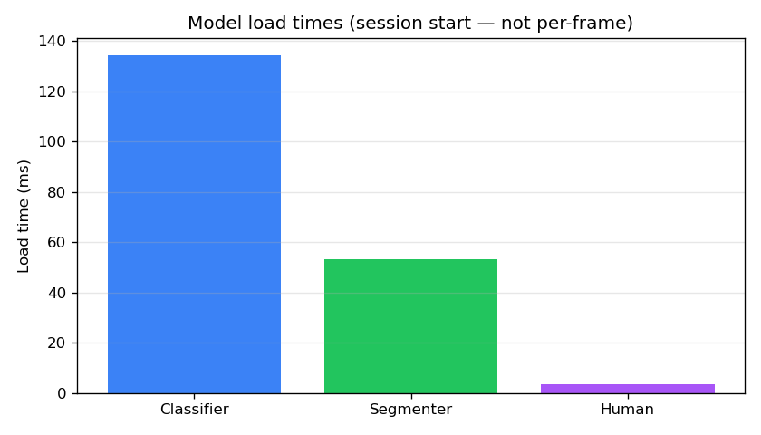
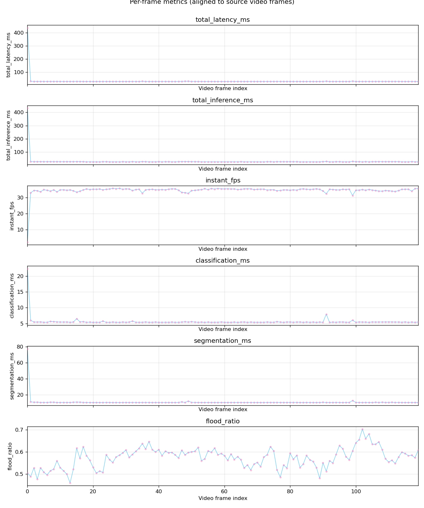
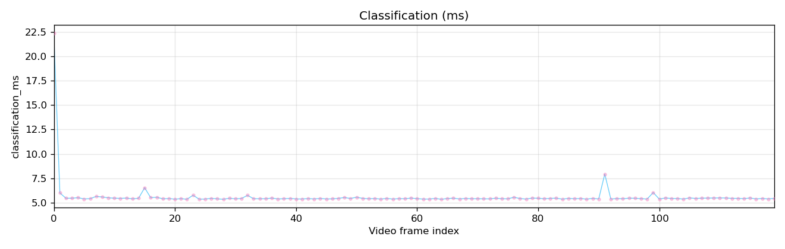
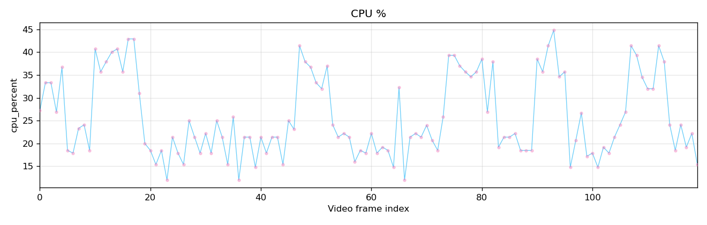
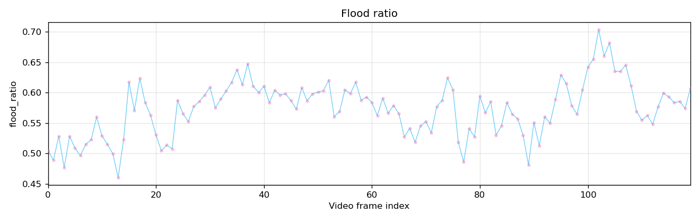
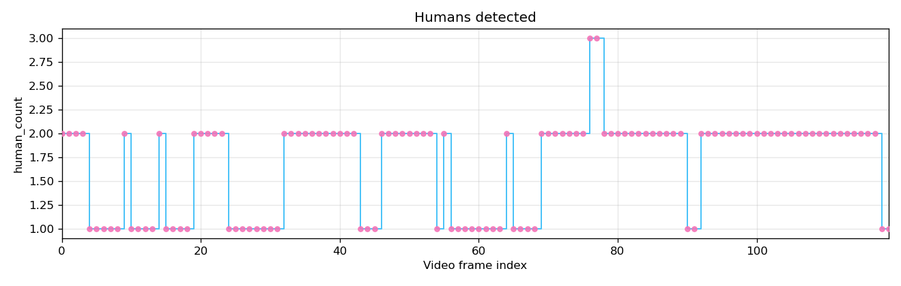
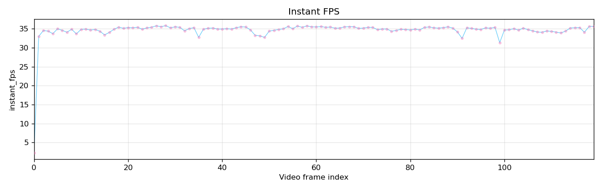
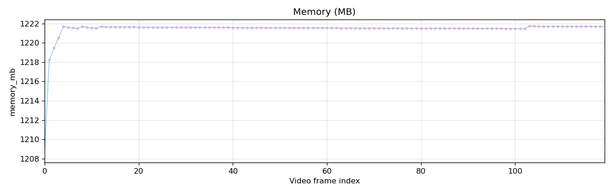
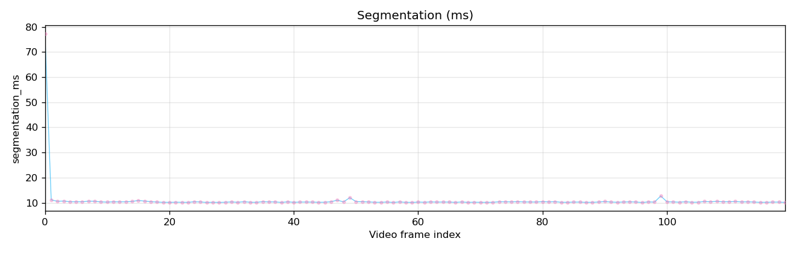
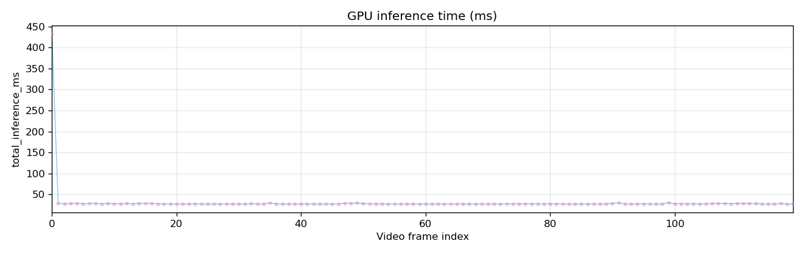
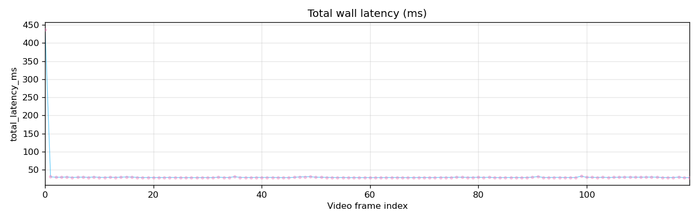
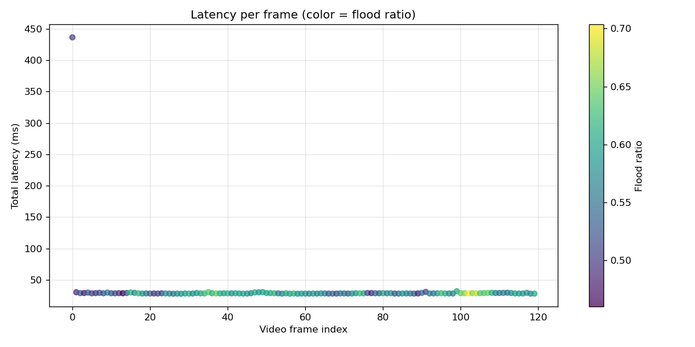